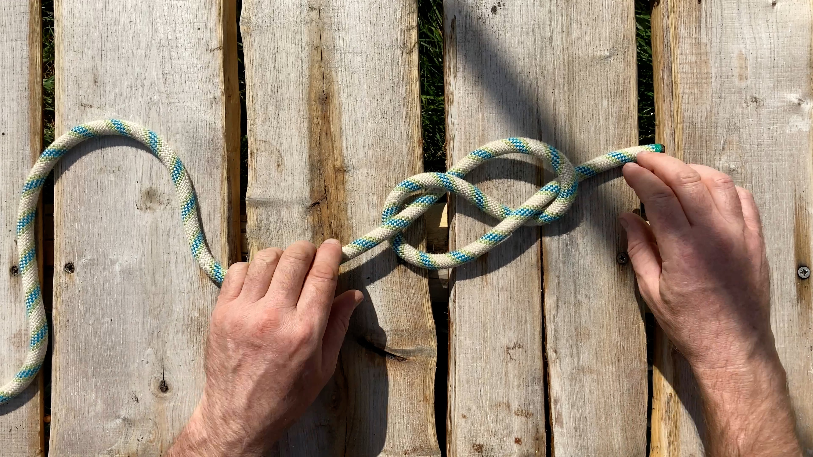
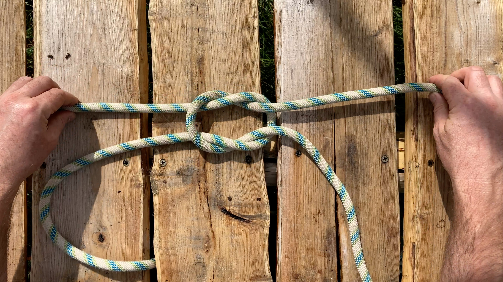
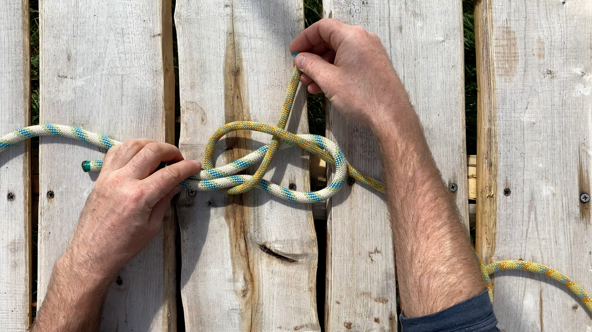

USEFUL KNOTS
Home
Tarp
Tidy
Timber
Hitch
Clove
Hitch
Taut Tarp
Hitch
Figure
Eight
Bowline
Knot
Reef
Knot
Round Turn &
Two Half Hitches
Sheet Bend &
Double Sheet Bend
Square
Lashing
Click on a knot or hitch below, or in the navigation bar above, to find out more and how to tie it
Great for tidying lengths of cord and guy ropes, either attached or on their own.
Tarp
tidy
Used to attach a rope to an object. Quick to tie and very easy to undo.
Timber
hitch
Used to quickly attach a rope or cord to an object, such as a mooring point.
Clove
hitch
Used to attach a rope or cord to an object and create tension resulting in a taut line.
Taut tarp
hitch

Used as a stopper knot to stop rope slippage. Doubling back on the figure eight creates a strong fixed loop.
Figure eight
knot
Used to make a fixed loop at the end of a rope.
Bowline
knot

Used to join two lengths of rope that are the same material and thickness together.
Reef
knot
Used to attach a rope or cord to an object, such as a beam or a hook.
Round turn &
two half hitches

Used to join two lengths of rope of different material or thickness together.
Sheet bend &
double sheet bend
Used to join two objects, such as spars, poles and sticks, together. The join is usually perpendicular.
Square
lashing
Hello World!